80映照scene公版✓ 判官过审学而不思则罔：刷完100条短视频，你记住了什么？
🎬 学了那么多，为什么你还是老样子？
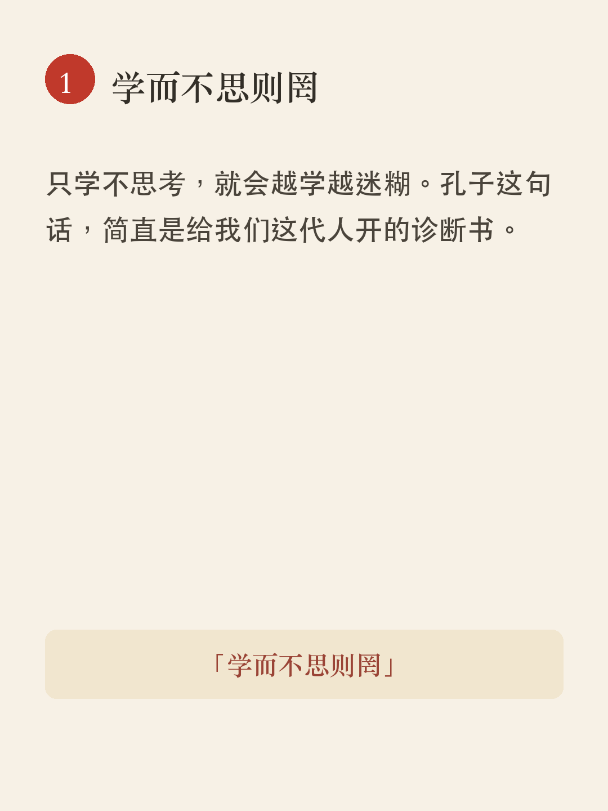
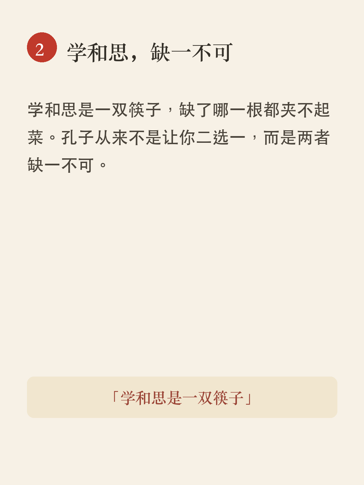
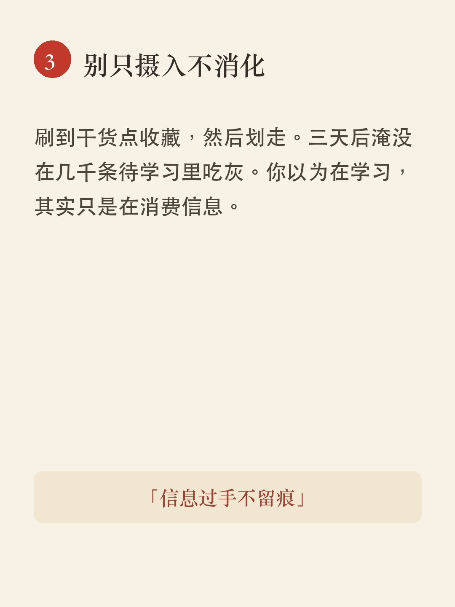
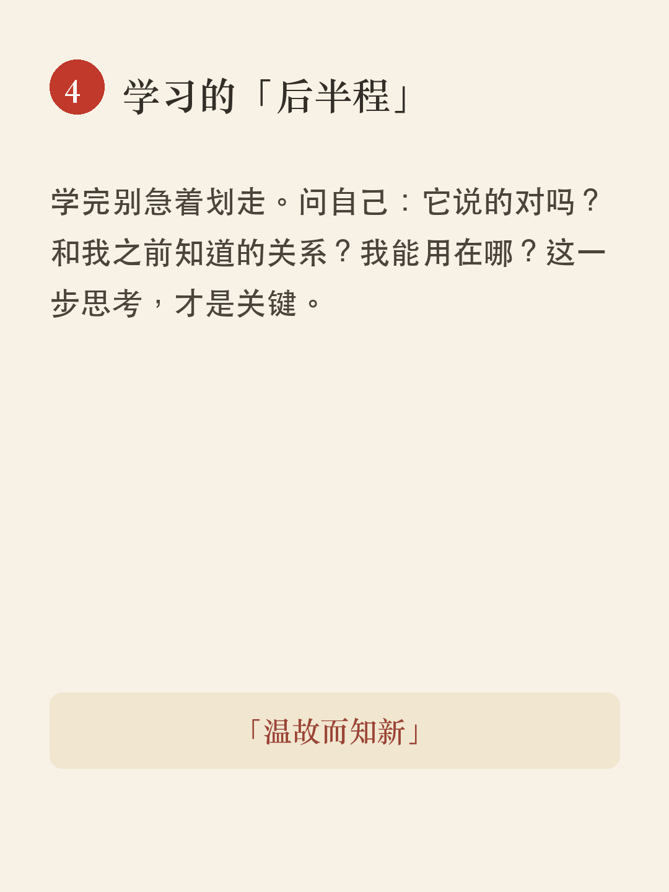
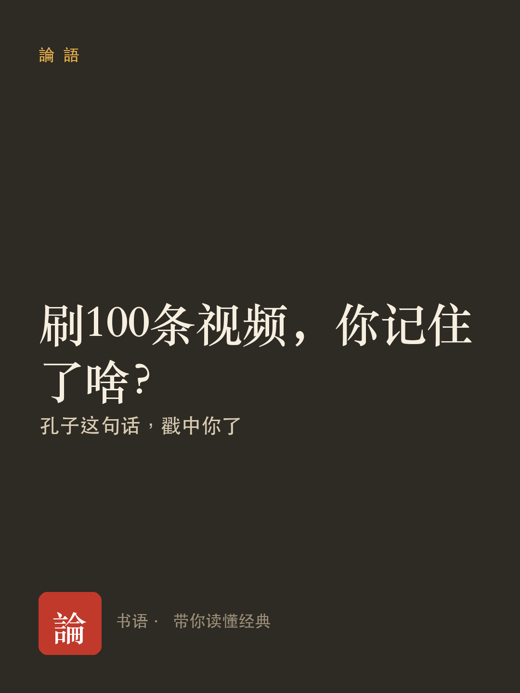
口播稿全文
你每天刷几十条短视频，收藏了几十G的知识付费课程，报了无数个训练营——但我问你，上个月学了什么？你能说清楚吗？
孔子在两千五百年前左右说过一句话：「学而不思则罔。」
『罔』多指"迷惑、受蒙蔽、无所适从"。
他说，只知道学，不知道思考，就会越学越迷糊。这话放到今天，简直就是给我们这代人开的诊断书。
孔子强调：「學而時習之」。『习』在《论语》中兼有"温习/复习"与"练习/实践"之义；就1.1"学而时习之"和1.4"传不习乎"而言，可解为反复实践/温习。
可孔子还有一句话，说的正好是另一个极端：「思而不学则殆。」
只知道空想而不学习，就会陷入危险。
所以你看，孔子从来不是让你二选一。他是告诉你：学和思，是一双筷子，缺了哪一根都夹不起菜来。
那为什么我们今天那么多人，学了一大堆，却还是老样子？
因为你只负责「摄入」，从没负责「消化」。
刷到一条干货，点个收藏，然后呢？然后划走了。三天之后，这条视频淹没在你的收藏夹里，和几千条「待学习」一起吃灰。
你以为你在学习，其实你只是在消费信息。信息过手不留痕，学再多也是白学。
孔子还说过一句话：「温故而知新，可以为师矣。」
反复温习旧知而能获得新理解新体会，这样的人可以为人师表。
所以别再比谁刷课多了。
下次你学到一个东西，别急着划走。停下来，问自己三个问题：它说的对吗？它和我之前知道的有什么关系？我能用在哪里？
这一步思考，才是学习的「后半程」。
学而不思，吃再多也不长肉；思而不学，想再多也是空转。
孔子两千五百年前左右就看透了这一点。
84洞见scene公版✓ 判官过审君子不是道德完人，是你做选择的底层代码
🎬 孔子说的'君子'，根本不是好人卡，而是一套决策系统。
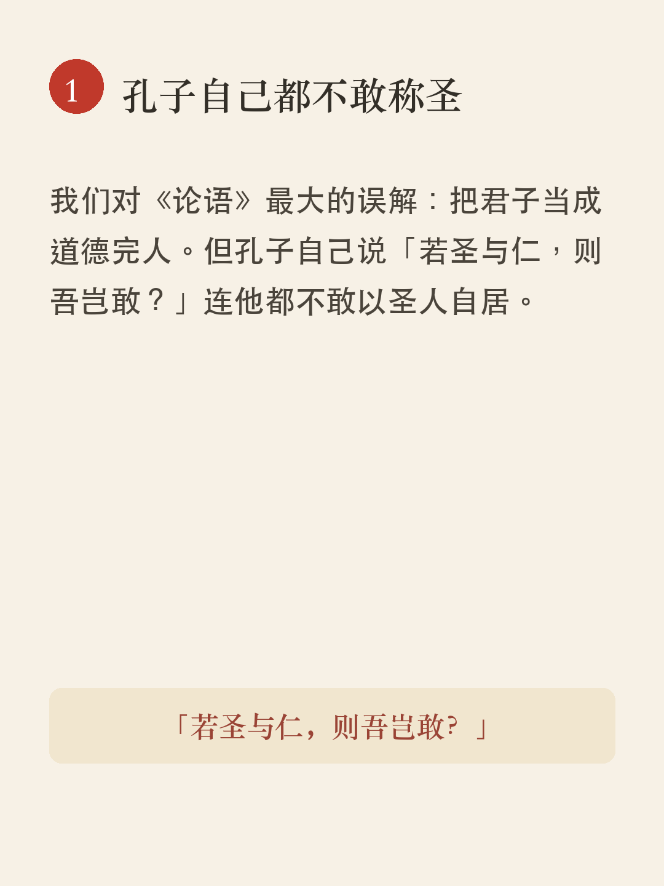
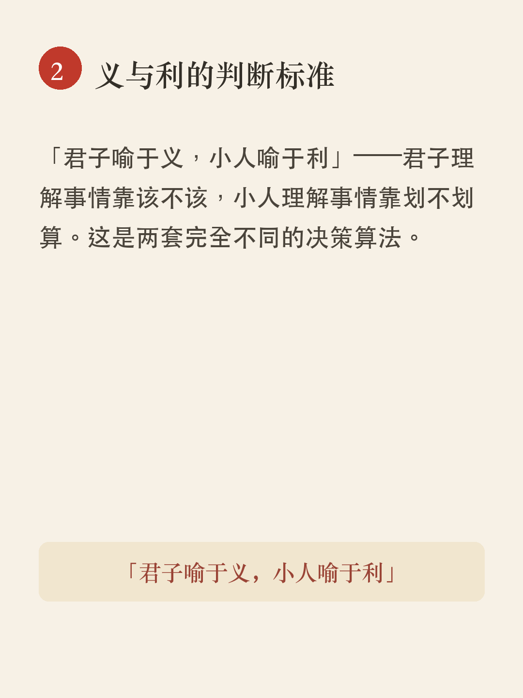
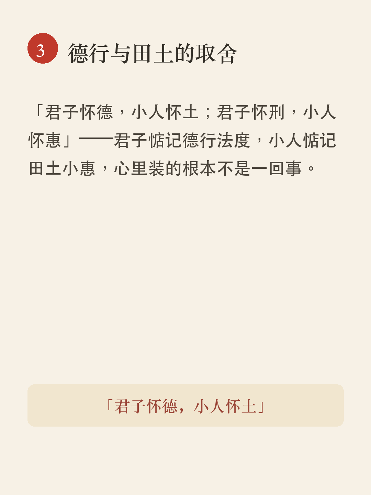
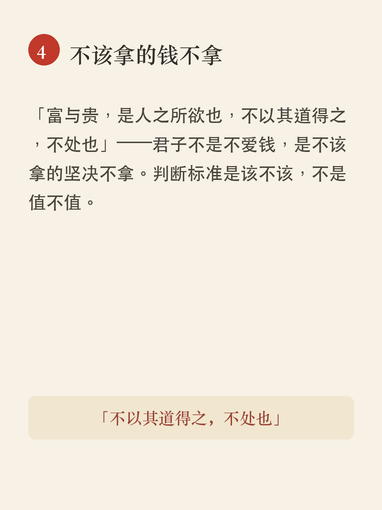
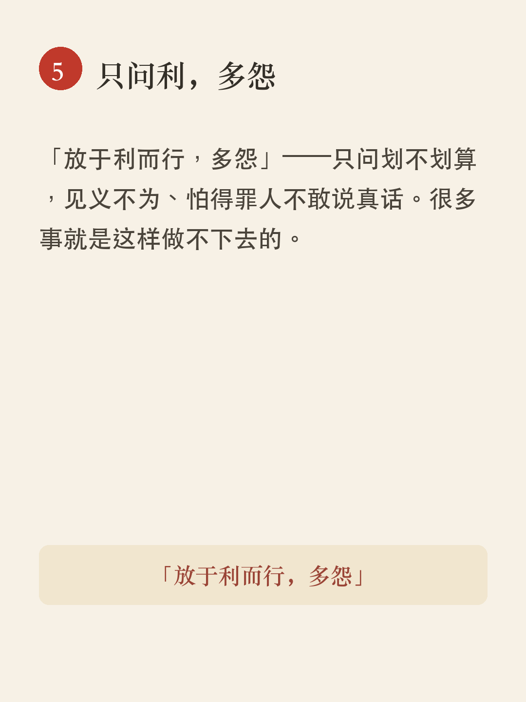
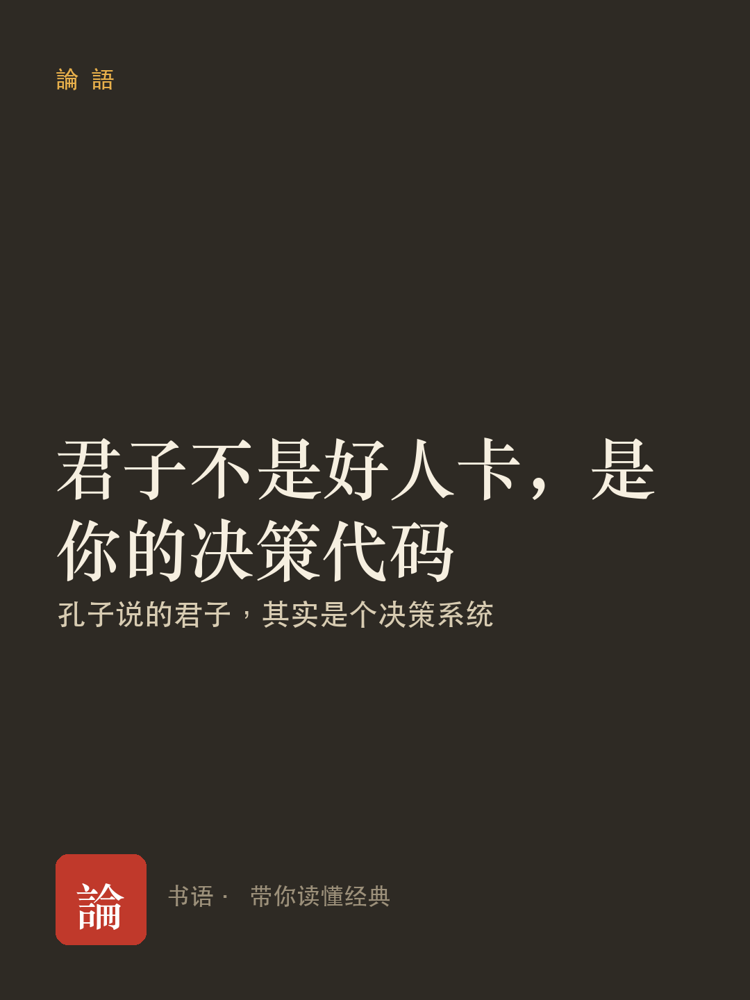
口播稿全文
你有没有发现，我们对《论语》最大的误解，就是把“君子”当成一张好人卡？
孔子说“君子”，不是夸你道德高尚，而是说你有一套特定的决策系统。
来，直接看原文。里仁篇里孔子讲得很清楚：**“君子喻于义，小人喻于利。”** 君子理解事情，靠的是“义”，该不该做；小人理解事情，靠的是“利”，划不划算。
再看同一篇的另一句：**“君子怀德，小人怀土；君子怀刑，小人怀惠。”** 君子心里惦记的是德行、法度，小人心里惦记的是田土与小惠。
这两句话放在一起，你就看出来了——孔子不是在给你发道德奖状，他是在描述两种完全不同的人生算法。
什么叫算法？就是遇到事情，你脑子里最先跑的那个判断程序。
小人遇到选择，程序自动运行：这么做对我有什么好处？风险多大？收益多少？合不合算？人皆欲富贵，这是人之常情，孔子说过“富与贵，是人之所欲也”。但人若以利为先，很多事就真的做不下去了——「放于利而行，多怨」，只问划不划算，见义不为，因为有风险；该说真话不说，因为怕得罪人。
但君子遇到选择，程序不一样。孔子说：**“富与贵，是人之所欲也，不以其道得之，不处也。贫与贱，是人之恶也，不以其道得之，不去也。”** 他不是说君子不喜欢钱、不想富贵——他是在说，哪怕穷，哪怕苦，不该拿的钱就是不拿，不该做的事就是不做。为什么？因为他的判断标准是“该不该”，不是“划不划算”。你看，同一篇里孔子还说：**“君子怀德，小人怀土……君子怀刑，小人怀惠。”** 这两句话放在一起，你就明白了：君子以义为判断，小人以利为取舍，方向不同，结果自然不同。
这就是最本质的区别：小人先问“值不值”，君子先问“对不对”。
你注意，孔子并未把君子塑成完美无缺的偶像。述而篇里他自己说：**“若圣与仁，则吾岂敢？”** 连他都不敢以圣人与仁者自居。他还说过：**“善人，吾不得而见之矣，得见有恒者，斯可矣。”** 连善人都难得一见，能见到有恒心向善的人就很不错了。他讲的是「过则勿惮改」，做错了没关系，改了就行。这不是要求你完美，而是说你的底层代码要对——遇到事，你得先过一遍“该不该”，而不是只跑“划不划算”。
所以读《论语》最受益的方式，不是把君子当成一个你要仰望的完美偶像，而是把它当成你手机里可以升级的决策系统。
下一次遇到选择，你不妨问自己一句：我现在用的是哪套算法？
80映照scene公版✓ 判官过审君子喻于义：看看你现在做事，先问'有没有好处'对不对？
🎬 你上一次做决定，先问该不该做，而不是能赚多少，是什么时候？
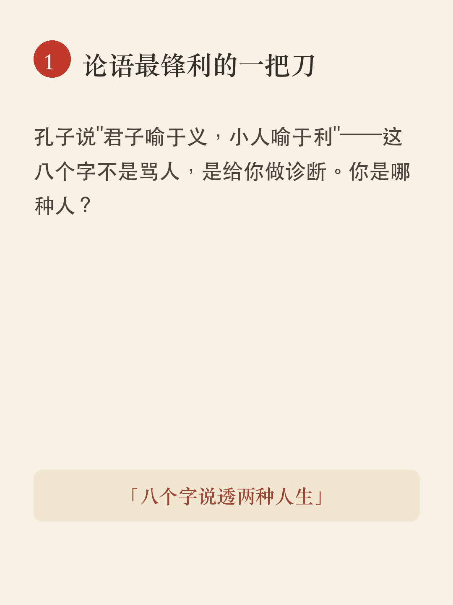
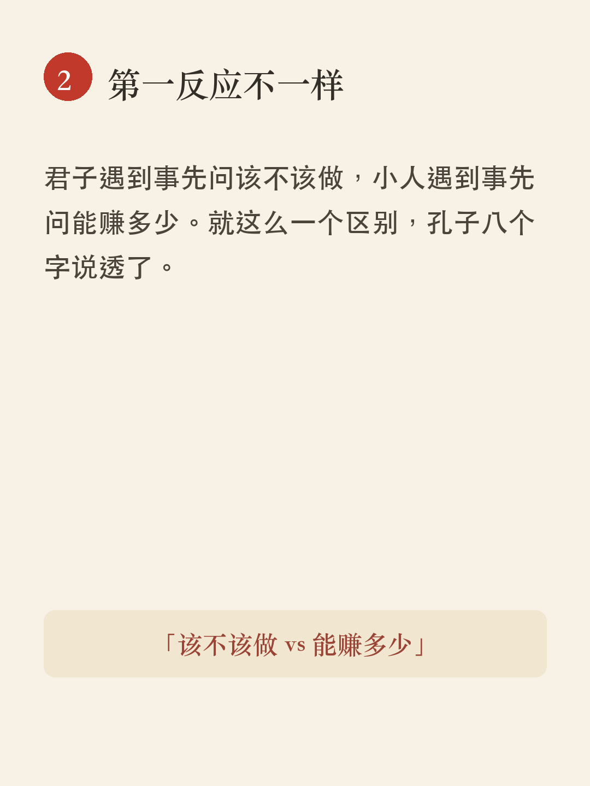
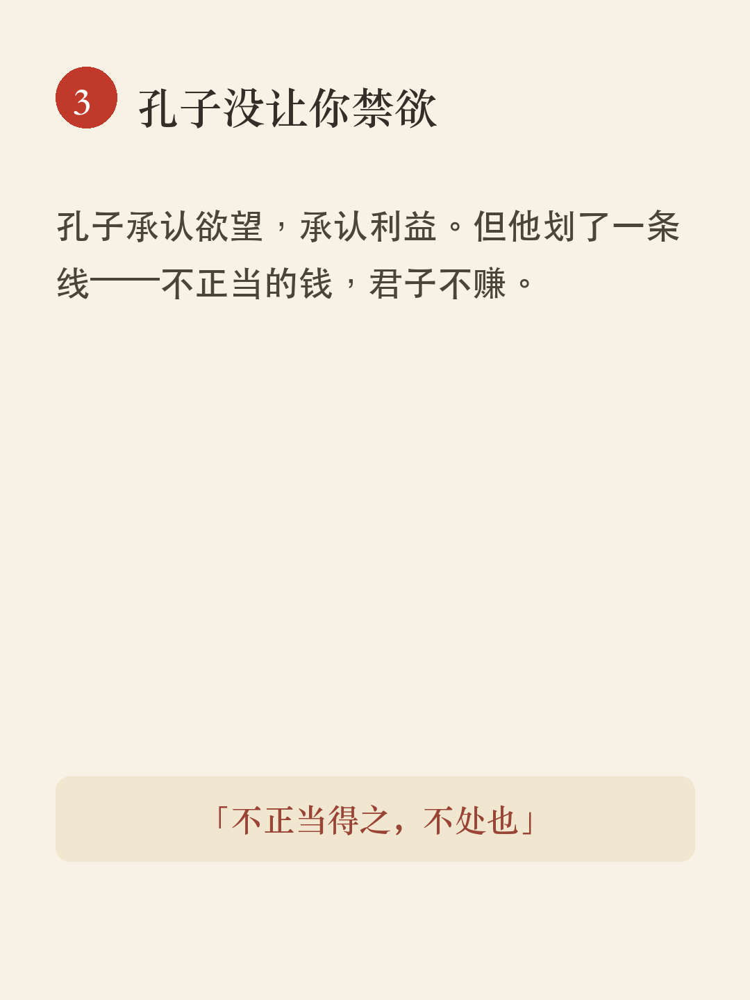
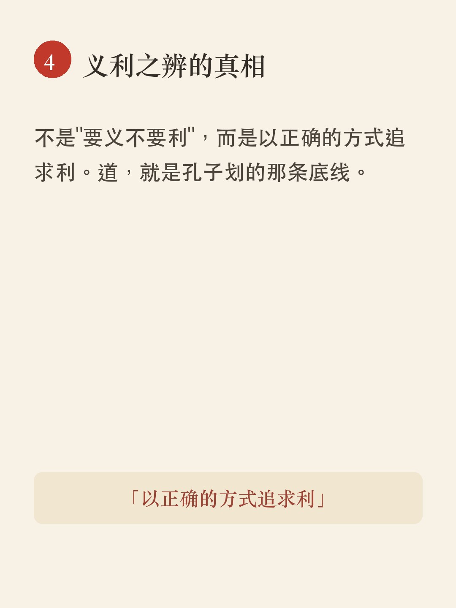
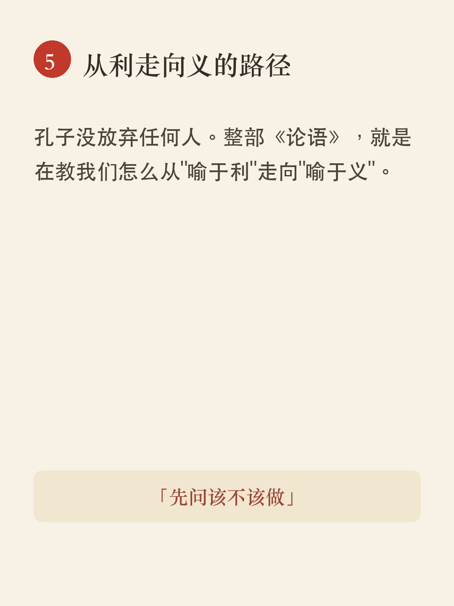
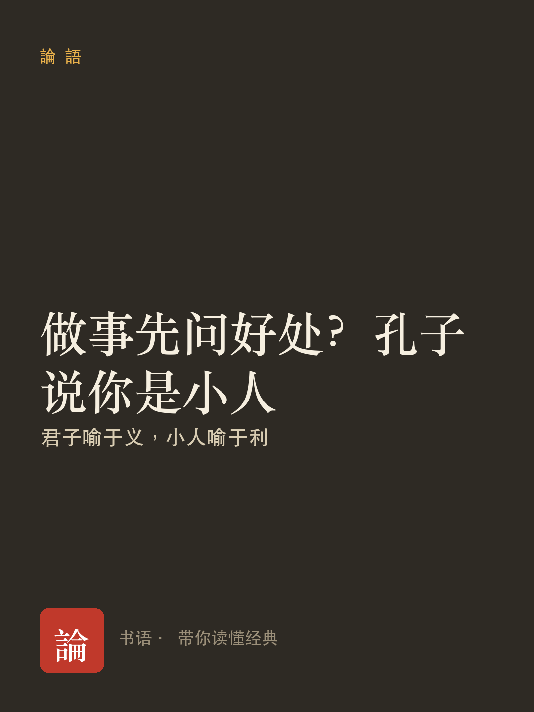
口播稿全文
孔子说的“君子喻于义，小人喻于利”——这八个字，是整部《论语》里最锋利的一把手术刀。你知道它厉害在哪吗？它不是骂人，它是在给你做诊断。
今天我想问你一个问题：你上一次做决定，先问“该不该做”，而不是“能赚多少”，是什么时候？昨天？上周？还是……你根本想不起来？
别急着回答。我们先来看看孔子到底在说什么。
“君子喻于义，小人喻于利。”这是《里仁》篇里的话。喻，是明白、通达的意思。孔子说，君子做事的逻辑是通达于义，小人做事的逻辑是通达于利。
请注意，孔子没有说君子不要利。他也没有说小人就不能有钱。他说的，是两种人思考问题的第一反应不一样。
君子遇到一件事，他的第一反应是：这件事对不对？符不符合道义？小人遇到同一件事，他的第一反应是：这件事对我有什么好处？
就这么简单。但就这么简单的一个区别，孔子用八个字说透了。
你发现没有，我们今天几乎所有人，遇到事情的第一反应都是“利益计算器”。找工作，先问工资多少；做副业，先算能赚多少；甚至帮人，也要掂量一下“对我有什么价值”。
孔子把这种人，叫“喻于利”的小人。
但孔子紧接着在同篇里还说了另一句话——“富与贵，是人之所欲也，不以其道得之，不处也。贫与贱，是人之恶也，不以其道得之，不去也。”
什么意思？富贵，人人都想要，但如果不是用正当的方式得到，君子不要。贫贱，人人都讨厌，但如果不是用正当的方式摆脱，君子也不逃。
你看，孔子不是禁欲主义者。他承认欲望，承认利益。但他划了一条线——这条线叫“道”。
所以“义利之辨”不是“要义不要利”，而是“以正确的方式追求利”。
但问题是，我们今天有多少人，还记得这条线？
你上一次拒绝一个机会，是因为“这件事不对”，而不是“这件事不划算”？你上一次帮助一个人，是因为“他需要”，而不是“他能给我什么”？
如果你想不起来，或者想起来觉得遥远——那孔子这八个字，可能说的就是你我。
但好消息是，孔子没有说“小人”就完了。他整部《论语》，就是在教我们怎么从“喻于利”走向“喻于义”。
所以今天回去，你可以试一件事：遇到下一个决定，先别打开计算器，先问自己一句——这件事，该不该做？
80洞见scene公版✓ 判官过审礼的本质是一颗心，不是三跪九叩
🎬 孔子说，给父母磕头磕得再响，心里没有敬意，那不叫孝。
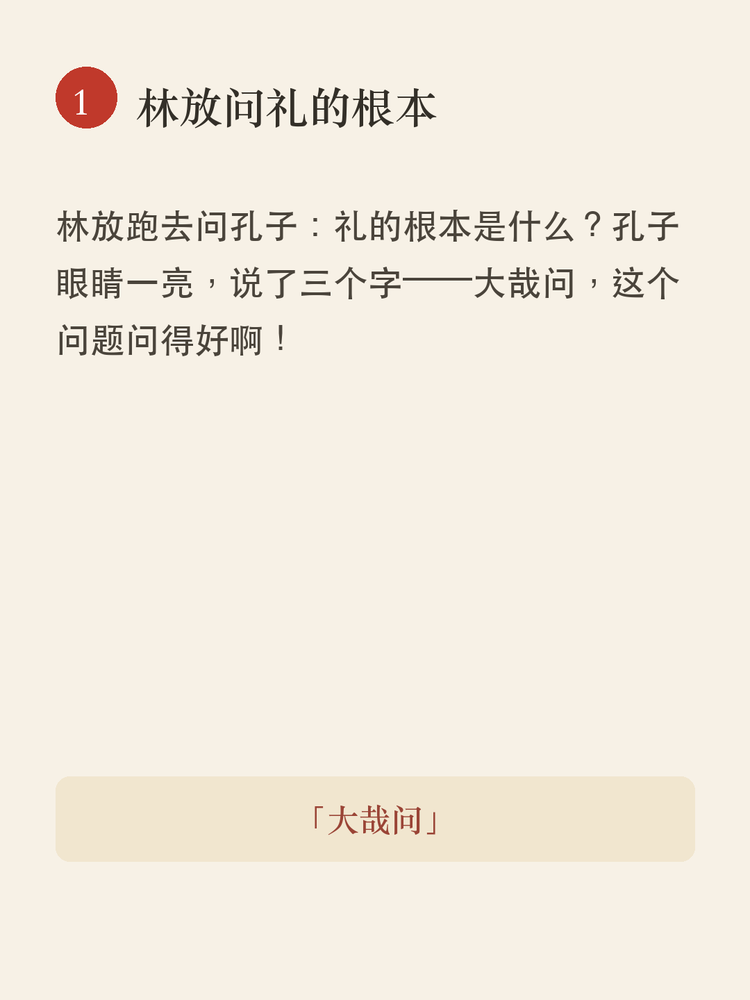
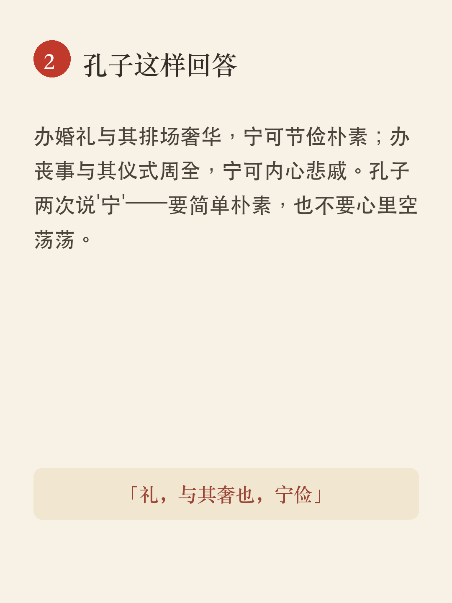
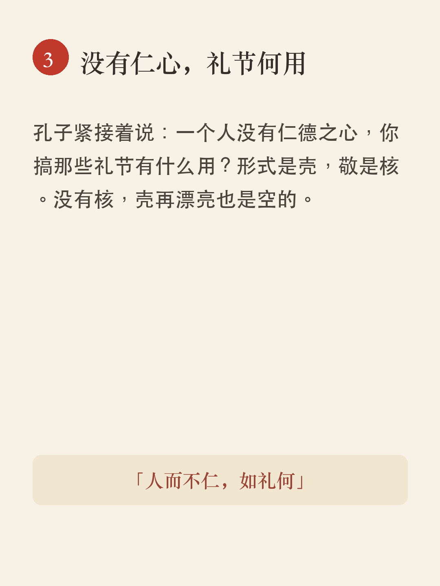
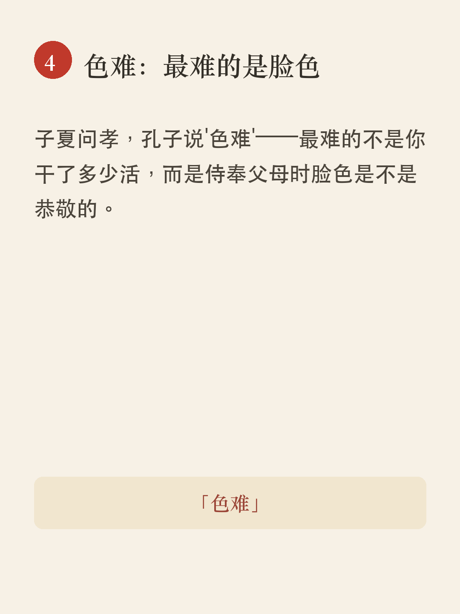
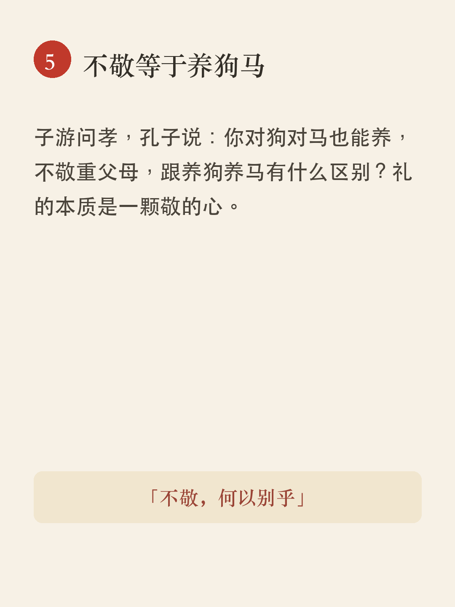
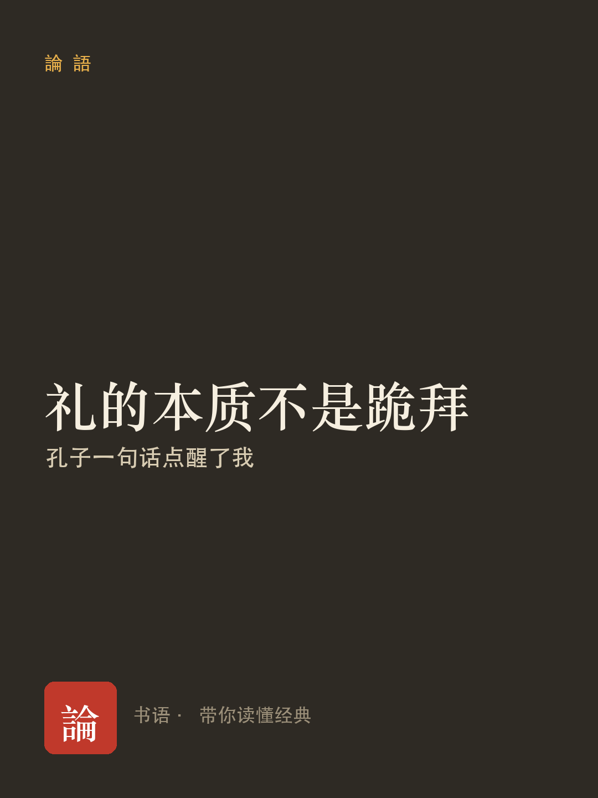
口播稿全文
你以为给父母磕三个响头，就算孝顺了？
孔子说：错。
林放这个人跑去问孔子：礼的根本是什么？
孔子眼睛一亮，说了三个字——"大哉问"。这个问题问得好啊！
然后他怎么回答的？原文是这么说的：
"礼，与其奢也，宁俭；丧，与其易也，宁戚。"
什么意思？办婚礼，与其排场奢华，宁可节俭朴素；办丧事，与其仪式周全，宁可内心悲戚。
你注意到了吗？孔子两次说"宁"——他宁可要那个简单、朴素、甚至有点寒酸的形式，也不要你搞一堆排场但心里空荡荡的。
为什么？
因为孔子紧接着在八佾篇说了另一句话——"人而不仁，如礼何？"
一个人没有仁德之心，你搞那些礼节有什么用？形式是壳，敬是核。没有核，壳再漂亮也是空的。
你再看为政篇。子夏问孝，孔子说"色难"——最难的不是你干了多少活，而是你侍奉父母的时候，脸色是不是恭敬的。
子游问孝，孔子说"至于犬马，皆能有养；不敬，何以别乎"——你对狗对马也能养，你不敬重父母，跟养狗养马有什么区别？
所以孔子说的礼，从来不是三跪九叩的姿势，不是烟熏火燎的排场，不是礼金红包的数额。
礼的本质，是一颗敬的心。
形式是壳，敬是核。你把核抓住了，壳怎么摆都行；你把核丢了，摆得再好看也是表演。
这个洞见，对今天"仪式感内卷"的我们，是一剂解药。
84映照scene公版✓ 判官过审为政以德：为什么你的团队带不动？因为你自己歪了
🎬 带团队带不动，下属不听你的话——先别怪他们，照照镜子。
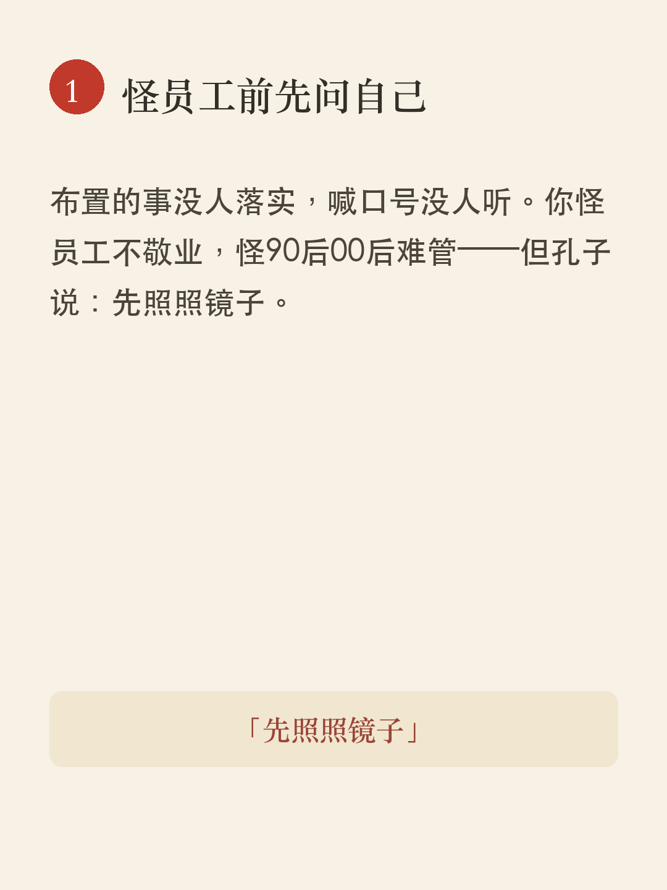
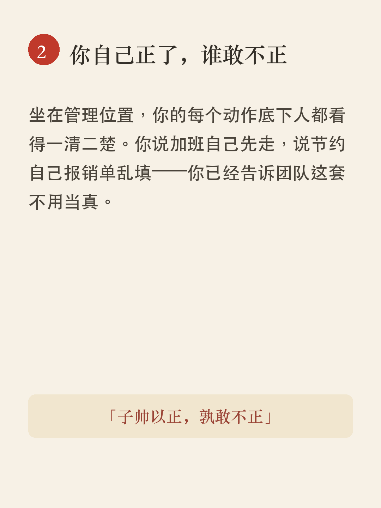
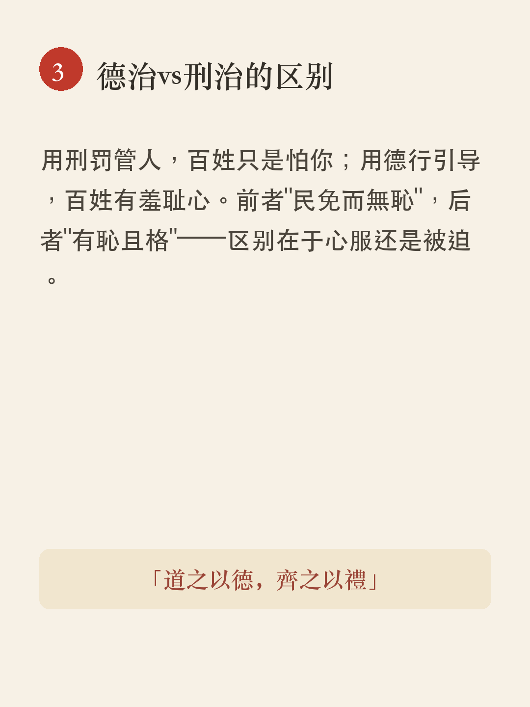
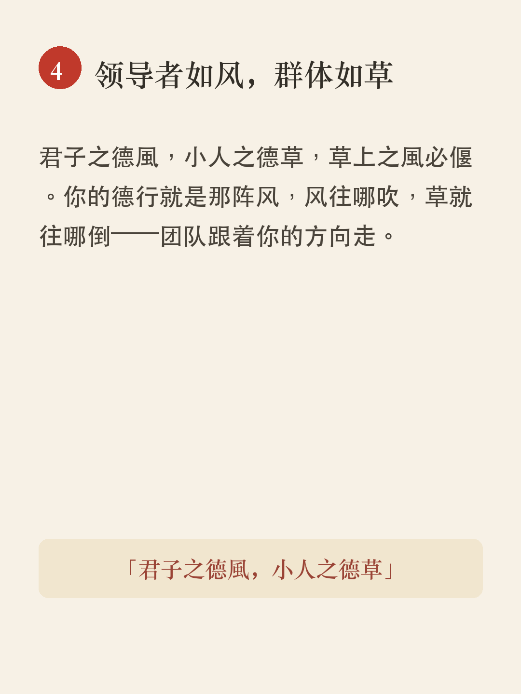
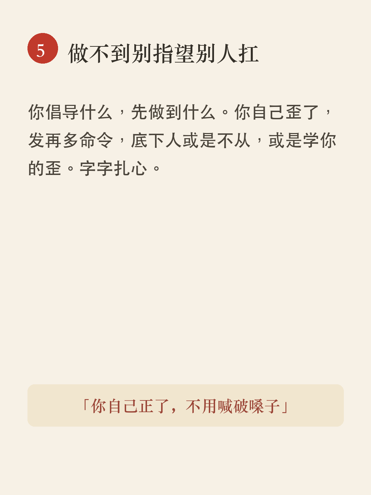
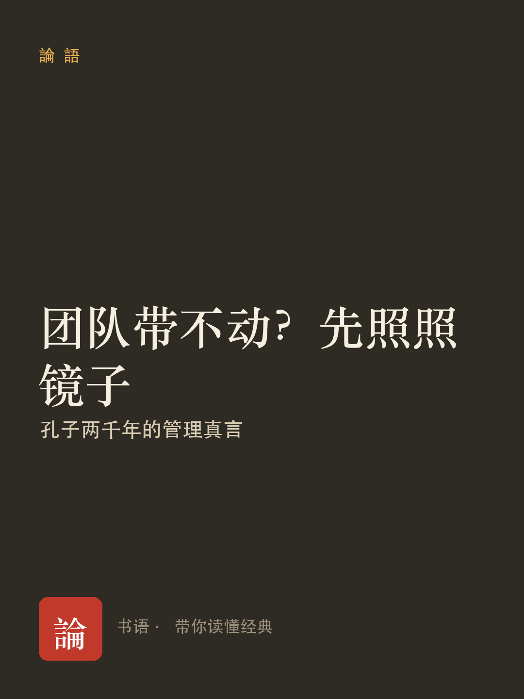
口播稿全文
你有没有这种感觉——团队带不动，下属不听你的话，布置下去的事没人落实，喊了半天口号，底下人该干嘛干嘛？
这时候你怪谁？怪员工不敬业，怪90后00后不好管，怪大环境不好。
孔子在《论语》里讲了一段话，我读到这里，愣了半天。
他说：**「政者正也，子帥以正，孰敢不正？」** 政，就是正。你自己带头正了，谁敢不正？
这句话放到今天，就是你坐在那个管理位置上，你的每一个动作底下人都看得一清二楚。你说加班你自己先走，你说节约你自己报销单乱填，你说客户第一你自己对客户敷衍——不用开口，你已经告诉团队"这套不用当真"。
你看《论语》里，他讲治国理政，孔子既反对单凭政刑，也强调执政者以身作则。《为政》篇里他说：**「道之以政，齊之以刑，民免而無恥。」** 用政令引导他们，用刑罚齐一他们，老百姓会规规矩矩免于犯错，但他们心里没有耻辱感——意思是他们不是真的服你，是怕你。
反过来说：**「道之以德，齊之以禮，有恥且格。」** 用德行引导，用礼齐一，老百姓有羞耻心，并能归于正。
你发现没有，孔子既区分了治理手段的高下，也始终强调——你自己是什么样的人，比你用什么制度管人更重要。
季康子问怎么治理，孔子说：**「政者正也，子帥以正，孰敢不正？」** 政，就是正。你自己带头正了，谁敢不正？
他还说过：**「臨之以莊則敬，孝慈則忠，舉善而教不能則勸。」** 你庄重对待百姓，他们就敬重你；你孝慈对待他们，他们就忠诚；你举善人、教不能的人，他们就自勉。制度与示范并行，这才是孔子眼中的好治理。
孔子还有个比喻：**「君子之德風，小人之德草，草上之風必偃。」** 领导者的德行如风，群体的德行如草，风往哪边吹，草就往哪边倒。
所以你带不动团队，先别急着改KPI。先照照镜子，看看自己是不是那个"身不正"的人。
这不是说当领导要完美，而是说——你倡导什么，你先做到什么。你做不到的，别指望别人替你扛。
孔子这句话两千多年了，今天读来，字字扎心。
你自己正了，不用喊破嗓子，下面的人会跟上来。你自己歪了，发再多命令，上行下效——底下人或是不从，或是学你的歪。
下次觉得团队难带，先问自己一句：我让他们做的事，我自己做到了吗？
74映照scene公版✓ 判官过审父母在，不远游：这句话坑了中国孩子多少年？
🎬 你以为孔子说'父母在不远游'？对不起，你可能被骗了两千年。
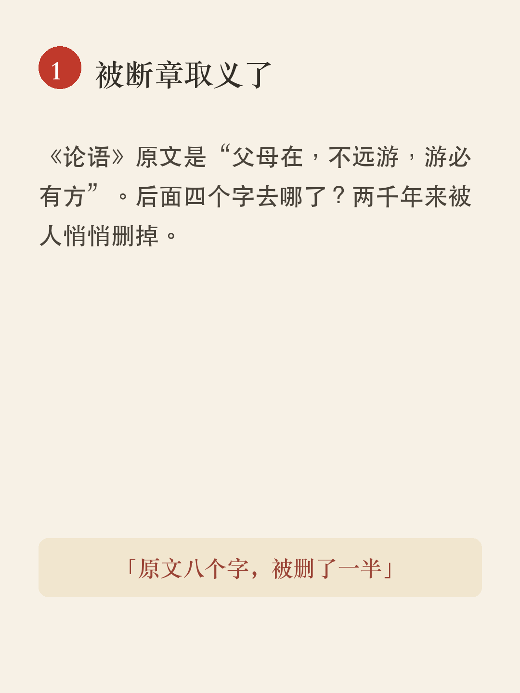
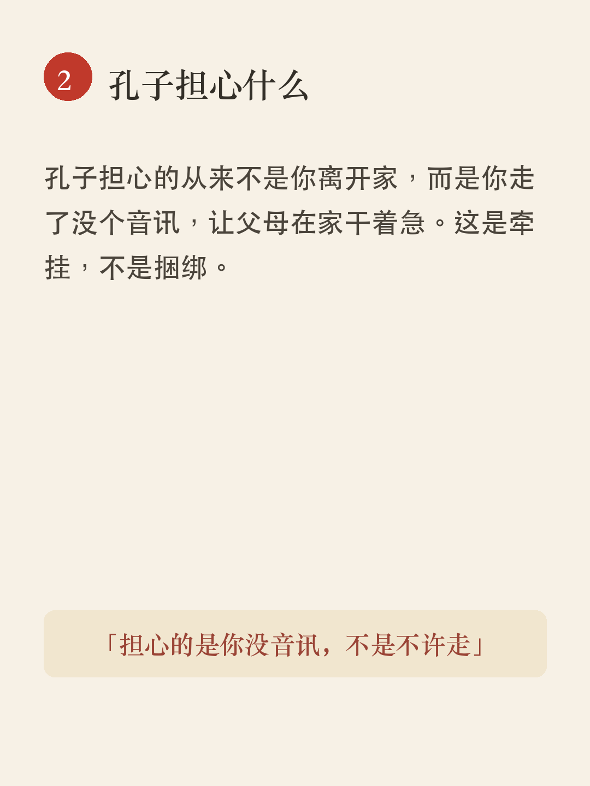
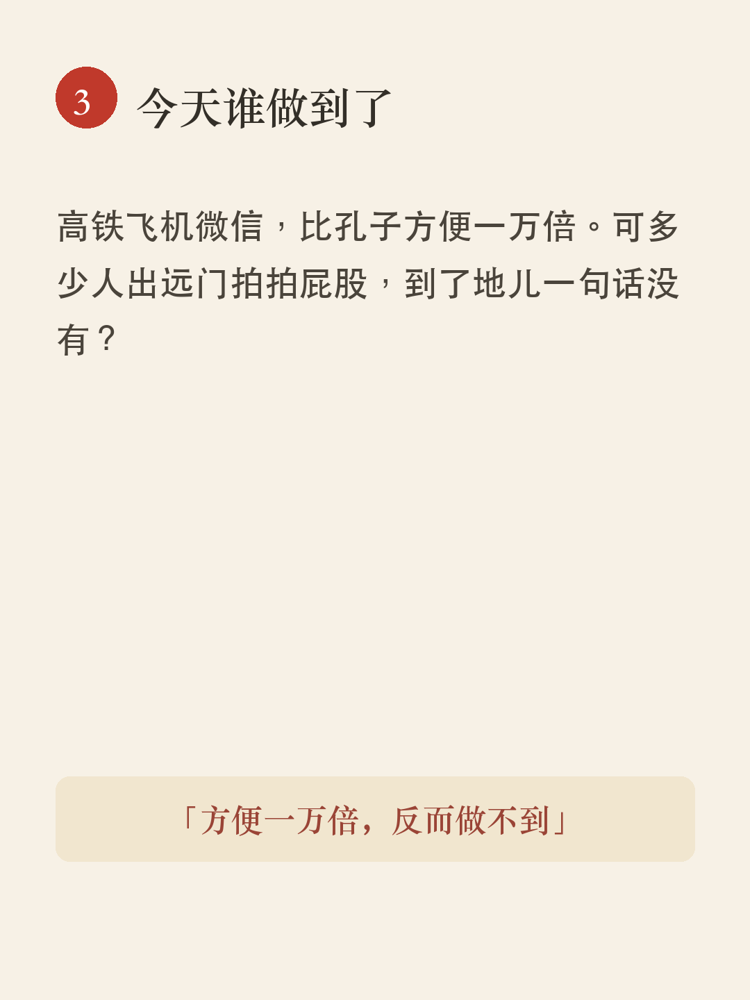
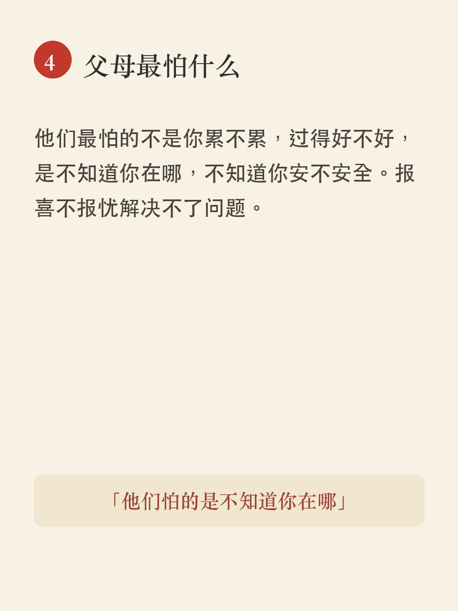
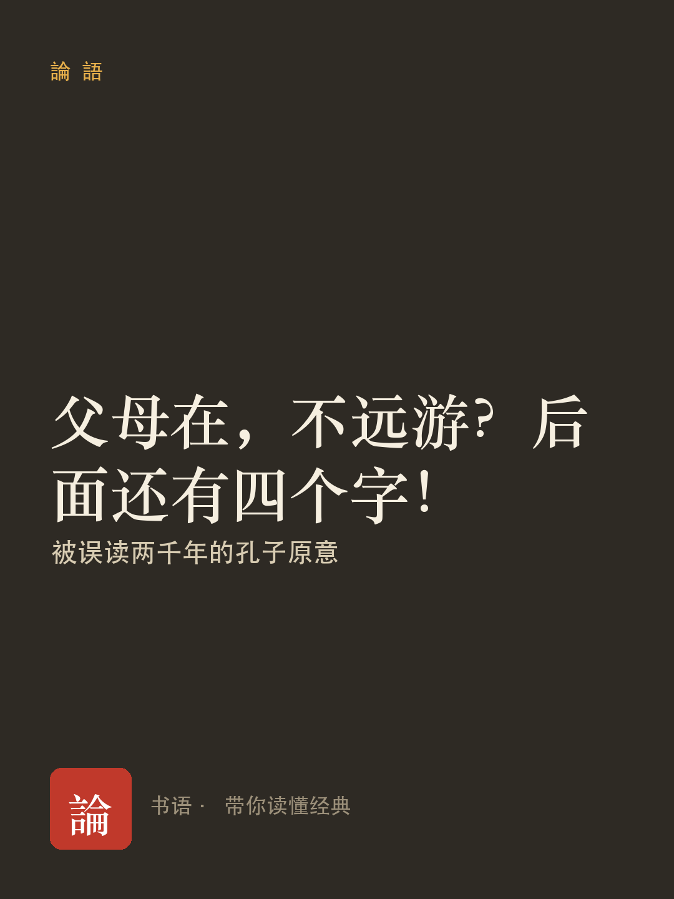
口播稿全文
你以为孔子说过“父母在不远游”？
好，我告诉你，你可能被骗了两千年。
你肯定听过这句话——“父母在，不远游”。多少家长拿来当尚方宝剑，多少子女听了就愧疚，好像你敢出去闯荡就是大逆不道。
但《论语》里仁篇第四章第十九条，原文是这么写的：“父母在，不远游，游必有方。”
看到了吗？后面还有四个字——“游必有方”。
方，不是方向吗？孔子说的是：父母在世的时候呢，不要跑太远；但如果真的必须出远门，你得告诉父母你要去哪。
不是不许走，是让你走之前把话说清楚。
你发现没有，这根本不是道德捆绑，这是一句有温度的话。孔子担心的从来不是你离开家，他担心的是你走了没个音讯，让父母在家干着急。
就像今天。你在北上广深漂着，一年回不了两次家，这本身没问题。但你有没有算过，你上一次主动跟父母说清楚“我这周忙什么、下周打算干什么”是哪天？
还是说，父母只能靠刷你的朋友圈来猜你过得好不好？
孔子那句话翻译成今天的大白话就是——你可以走，但你得让我知道你在哪，让我放心。
这不是束缚，这是牵挂。
而我们今天，有高铁、有飞机、有微信视频，比孔子那个时代方便一万倍。可多少人反而连“游必有方”都做不到了？走的时候拍拍屁股，到了地方一句话没有，美其名曰“报喜不报忧”，可你想过没有，父母最怕的从来不是你过得好不好，你累不累——他们最怕的是不知道你在哪，不知道你安不安全。
所以那句话我今天送给你，不是让你回家守着父母哪儿都别去，是让你记住——
你可以去追你的星辰大海，但记得给爱你的人留一条路，让他们知道你在哪。
这才是孔子真正想说的。
80人物thread公版✓ 判官过审颜渊：孔子最爱的学生，为什么穷得叮当响还笑得出来？
🎬 孔子的第一弟子，又穷又短命，却是老师心里永远的痛。
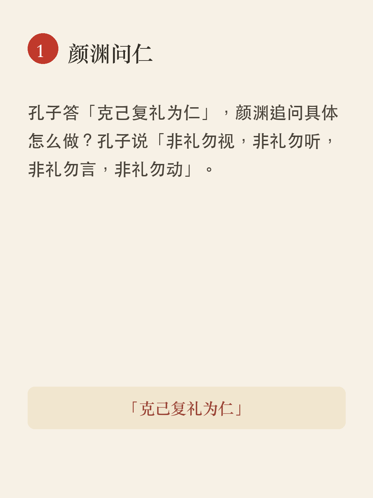
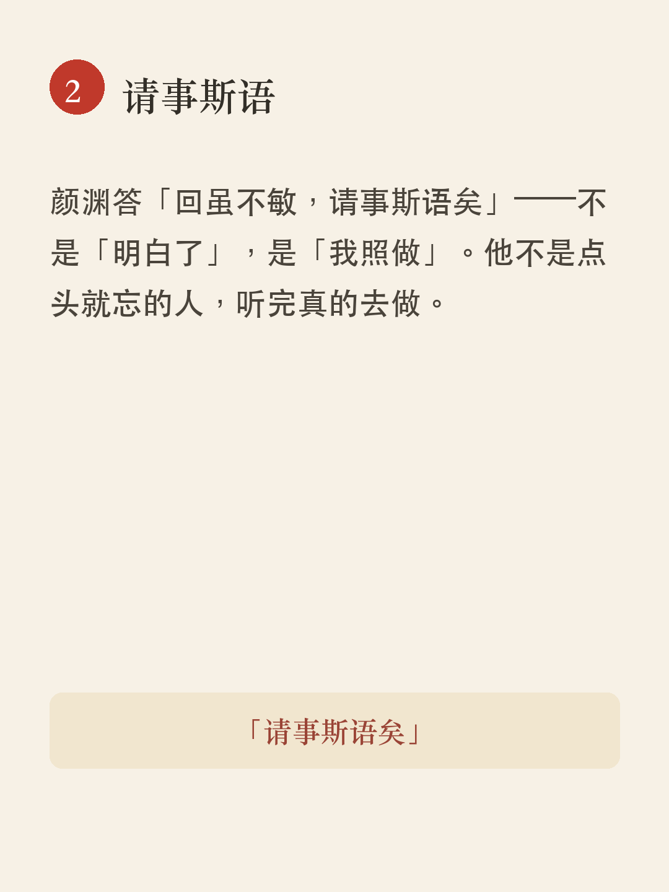
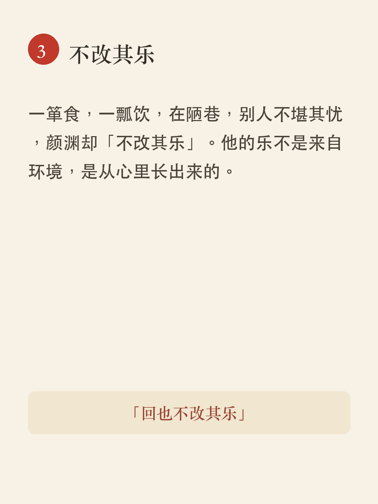
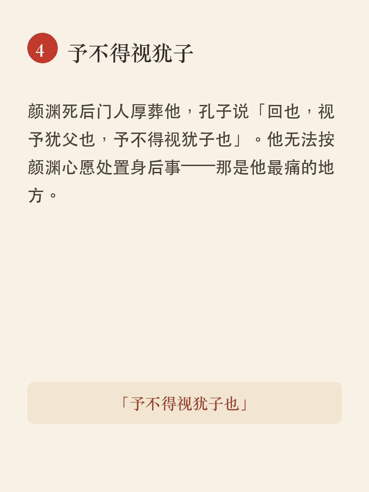
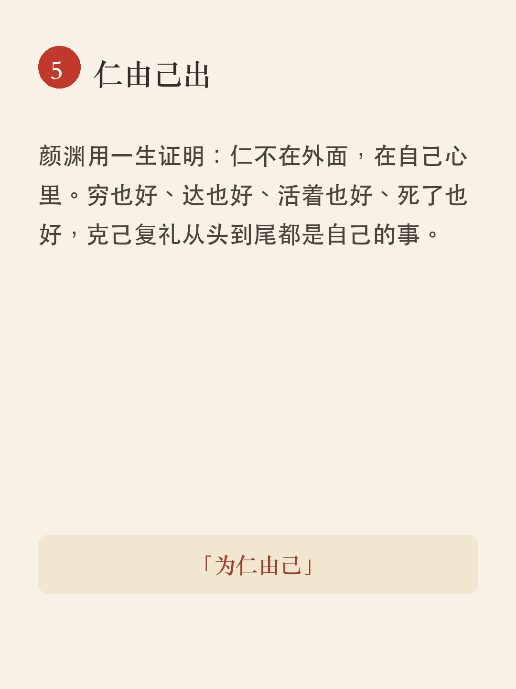
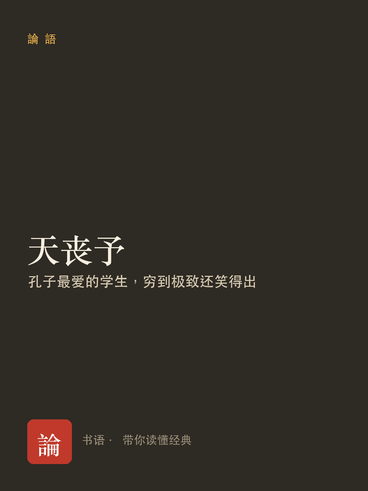
口播稿全文
孔子这辈子夸过无数学生，子路勇、子贡达、冉求艺，但你翻遍《论语》，罕见地痛哭至慟，不是为别人。
先进篇里，颜渊死了，孔子说了两句话，一句比一句重。先是“噫！天丧予！天丧予！”——哎呀，老天要了我的命啊！然后他哭得太厉害了，身边的人劝他说“您太悲痛了”，他反问了一句：“有恸乎？非夫人之为恸而谁为！”——我哭成这样不对吗？不为这个人哭，我还为谁哭！
你想想，孔子什么人？周游列国，屡遭险厄，如在匡被困，他说过“饭疏食，饮水，曲肱而枕之，乐亦在其中矣。不义而富且贵，于我如浮云”。可颜渊的死，直接把他击穿了。
那颜渊到底是谁？为什么他死了，孔子觉得天都塌了？
翻开颜渊篇，开篇第一段，就是这两个人之间最核心的对话。
颜渊问仁。
孔子怎么答的？“克己复礼为仁。一日克己复礼，天下归仁焉。为仁由己，而由仁乎哉？”——克制自己、回归礼制，这就是仁。一旦做到了，全天下都会认可你的仁德。行仁这件事，靠的是自己，跟别人有什么关系？
这话听着有点大，对吧？但颜渊接着问了一个最扎实的问题：“请问其目？”——具体怎么做？
孔子说：“非礼勿视，非礼勿听，非礼勿言，非礼勿动。”——不合礼的不要看、不要听、不要说、不要做。
颜渊的回答是：“回虽不敏，请事斯语矣。”——我虽然不聪明，但我一定照着做。
你注意这三个字：“请事斯语”。不是“明白了”，是“我照做”。这不是客气话，是颜渊这个人的质地——他不是那种听完道理点点头、出了门就忘的人。他听完，就真的去做。
公冶长篇里，子贡自认为已经很厉害了，孔子问他“你和颜回比怎么样”，子贡老老实实说“赐也何敢望回？回也闻一以知十，赐也闻一知二”。闻一知十是什么概念？不是聪明到爆炸，是他真的把孔子说的东西贯通成一个整体了。
但问题来了——颜渊这么聪明，这么得孔子真传，按理说应该去做官、施展抱负对吧？可《论语》里你看他的生活状态。
雍也篇，孔子亲口说的：“贤哉，回也！一箪食，一瓢饮，在陋巷，人不堪其忧，回也不改其乐。贤哉，回也！”——贤德啊颜回！一碗饭、一瓢水，住在破巷子里，换了谁都受不了那种苦，可他照样快乐。贤德啊颜回！
你注意这个“人不堪其忧”。别人住在那种地方，早就愁眉苦脸了，可颜渊“不改其乐”。他的乐不是来自于外面的环境，而是从心里长出来的。
这太反常识了。
人活在乱世，穷到揭不开锅，没有地位、没有前途，大多数人要么怨天尤人，要么随波逐流。可颜渊做到了什么？“克己复礼”。克己，是克制自己的欲望；复礼，是让自己的生活合乎规范。
不是他不能富贵。是他选择不以外物累其心。
颜渊问仁，孔子说“为仁由己，而由仁乎哉”——行仁这件事，靠的是自己，跟别人有什么关系？
这句话说出来容易，做起来难于登天。乱世里，有几个人能做到“为仁由己”？大多数人都在等——等一个贤明的君主、等一个施展的机会、等别人先做我再做。
可颜渊不是。他穷得要命，没有平台、没有资源、没有靠山，唯一有的就是孔子教他的那些道理。而他就真的把这些道理活成了自己的日子。
所以孔子说“回也，非助我者也，于吾言无所不说”——颜回不是那种能给我启发的人，他对我说的每一句话都发自内心地认同和欢喜。
这不是客气。这是孔子在承认：颜渊，是他最纯粹的学生，是那个把“为仁由己”活出来的人。
可就是这个活出来的人，不幸短命死矣。
先进篇里，颜渊死的时候，发生了一件事。颜路（颜渊之父）请求孔子把车子卖了，给颜渊买一副外棺。
孔子怎么回答的？他说：“才不才，亦各言其子也。鲤也死，有棺而无椁。吾不徒行，以为之椁，以吾从大夫之后，不可徒行也。”
孔子的儿子孔鲤死的时候，有棺没有椁。颜渊死了，孔子没有把自己的车卖掉给他买椁，因为他在大夫之后行列，不可徒行。
这话听起来好像有点不近人情——你最爱这个学生，他死了，你连车都不舍得卖？
但你再往下看。门人们最终还是厚葬了颜渊。孔子知道以后，说了一句更重的话：“回也，视予犹父也，予不得视犹子也。非我也，夫二三子也。”
——颜回看待我像父亲一样，可我不能像对待自己儿子那样对待他。不是我（要厚葬），是那几个门人（自作主张）。
这句话里的痛苦有两层：一是孔子反对厚葬，门人却自作主张；二是孔子无法像对待儿子那样处置颜渊的后事。门人们没有听孔子的安排，自作主张厚葬了颜渊，孔子知道这不是颜渊想要的——颜渊一生克己复礼、以俭为德，他不会愿意让人为他铺张。可孔子已经拦不住了。
所以“予不得视犹子也”这句话，既是无奈与痛惜，也是将厚葬之责归于门人——我连他的身后事都不能完全按他的心意来。
你再回想那句“天丧予”。
那不只是老师死了学生。那是孔子在乱世中看见自己仁学理想活生生站在面前，而这个活生生的证明，不幸短命死矣。
在匡地被困，颜渊走散了，孔子急得说“吾以女为死矣”，以为他死了。后来颜渊赶上来，答了一句“子在，回何敢死”——你还在，我怎么敢死。
这玩笑里藏着真心。颜渊在，孔子就觉得自己的道还有人来继承、还有人来懂。
可颜渊死了。
颜渊这一死，孔子说的“克己复礼为仁”由谁来实现？他说的“为仁由己”由谁来示范？他那个“天下归仁”的理想，还有谁能在现实中活出来？
颜渊用他的一生证明了：仁不在外面，在自己心里。穷也好、达也好、活着也好、死了也好，克己复礼、不改其乐，这件事从头到尾都是自己的事。
可他证明了之后，人没了。
所以你再读那句“贤哉，回也！一箪食，一瓢饮，在陋巷，人不堪其忧，回也不改其乐”。
这不是在说一个安贫乐道的故事。
这是在说：一个人，在最贫贱的处境里，用最干净的方式，守住了孔子在乱世中那个孤独的理想。而守住这件事本身，就是他最大的富足。
孔子失去颜渊，不只是失去了最爱的学生。
他失去了孔子所公认最能躬行仁者之一（如“回也，其心三月不违仁”）。
天丧予。
82故事scene公版✓ 判官过审暮春者，春服既成：孔子为什么被一个'躺平'的回答打动？
🎬 四个学生谈理想，三个说要治国平天下，只有一个人说想春天洗洗澡、吹吹风——孔子居然最喜欢他。
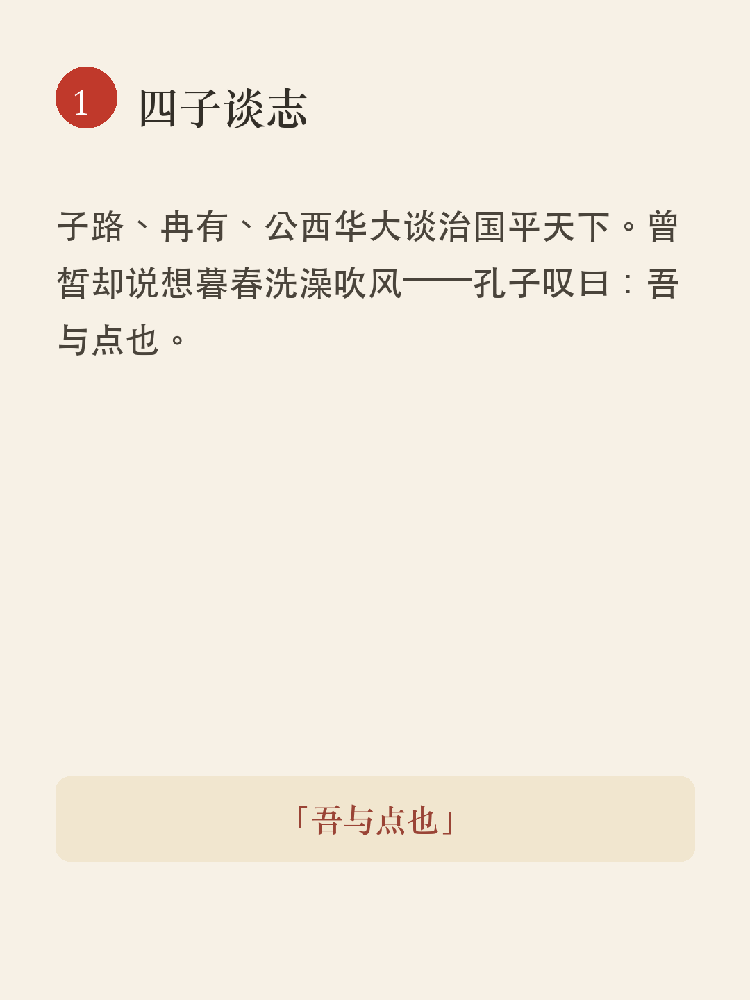
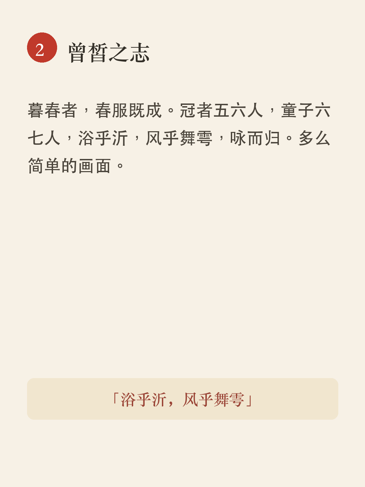
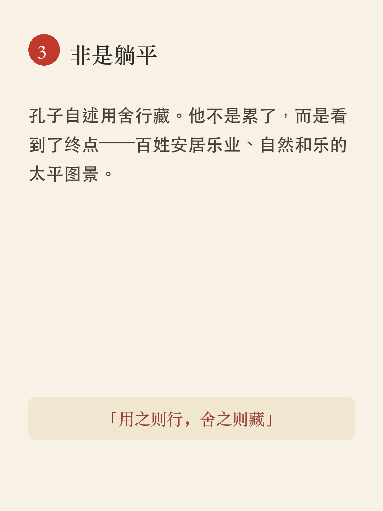
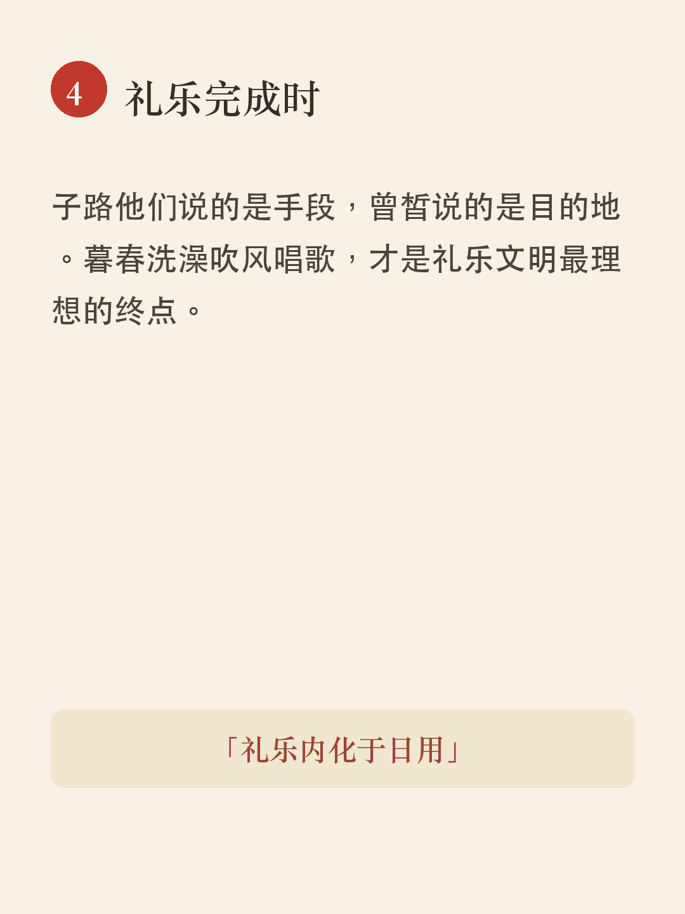
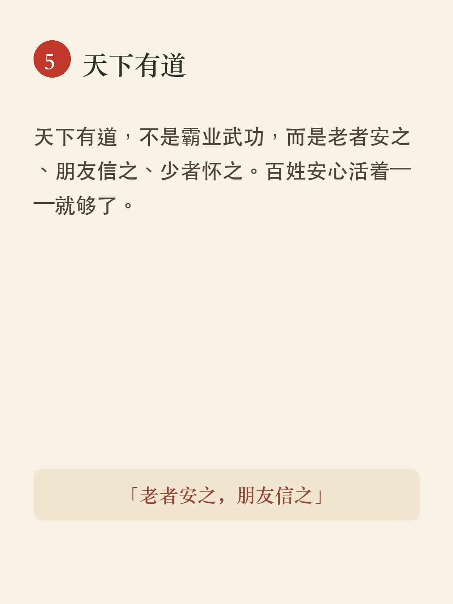
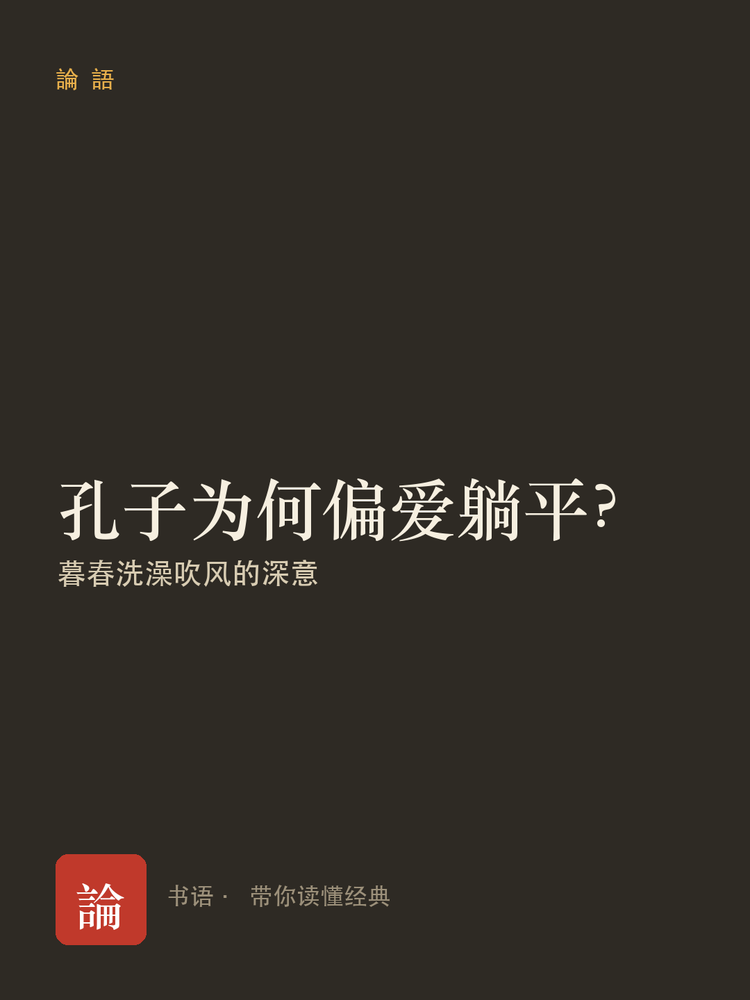
口播稿全文
四个学生谈理想，三个说要治国平天下，只有一个人说想春天洗洗澡、吹吹风——孔子居然最喜欢他。
这是《论语》里最反常识的一段对话。
子路说，给我一个千乘之国，我能把它治理得人人勇敢、有勇且知方。孔子哂之。冉有说，给我六七十里地，我能让人吃饱，至于礼乐，等君子来吧。公西华说，我愿意学习宗庙祭祀、诸侯会盟，当个小小的相礼。三人皆述及治事与礼事之志。
然后曾皙来了。
他正在鼓瑟，听到老师问，慢慢地放下瑟，站起来说：我和前面三位说的不一样。
孔子说，有什么关系呢？各人说各人的志向罢了。
曾皙就说：暮春者，春服既成。冠者五六人，童子六七人，浴乎沂，风乎舞雩，咏而归。
暮春时节，春天的衣服已经穿稳当了。五六个成年人，六七个孩子，在沂水里洗洗澡，在舞雩台上吹吹风，一路唱着歌回家。
就这么简单。
然后孔子喟然叹曰：吾与点也。
我赞成曾皙啊。
这一声叹息，是《论语》里孔子最动人的时刻。
你可能会想，孔子是不是在乱世里累了、倦了，想躺平了？不是的。孔子自述"用之则行，舍之则藏"。
那他为什么被一个"洗澡吹风"的回答打动了？
可作一解：曾皙所描绘的，是礼行乐和、民风自正的日常图景；孔子叹曰"吾与点也"或表达对这种太平日用之美的赞许。
你仔细看曾皙描绘的场景：暮春、沂水、舞雩台、唱歌回家。这不是一个人的隐逸生活，这是整个社会安定之后，百姓自然而然的状态——他们有余力去沐浴、去吹风、有心情唱歌。
舞雩为祈雨之礼相关之处名。当礼乐教化真正推行开来，百姓安居乐业，不需要打仗、不需要恐惧，他们才能在暮春时节，带着孩子，约上朋友，去沂水边洗洗澡，在祭坛上吹吹风，唱着歌回家。
这才是孔子真正想要的。
孔子自许"吾从周"，所向在礼乐之复。而"天下有道"在孔子心里，从来不是霸业，不是武功，不是开疆拓土。
是"老者安之，朋友信之，少者怀之"。
是百姓能安心生活，孩子能健康成长，老人能安度晚年。
曾皙说的那个画面，恰恰是礼乐文明最理想的终点：不是宏图霸业，而是百姓安居、自然和乐。
所以孔子一声叹息。
子路他们说的都对，但那是手段，是过程，是大臣该做的事。而曾皙说的，是这一切努力最终要抵达的地方。
礼乐教化内化于日用，刑措而民自正——当有一天，百姓不需要被治理，不需要被教化，他们只是安安心心地活着，暮春时节洗洗澡、吹吹风、唱唱歌——那才是礼乐文明的完成。
吾与点也。
不是累了，是终于看到了终点。